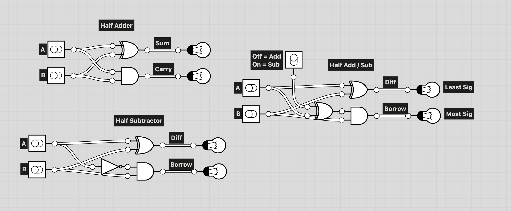
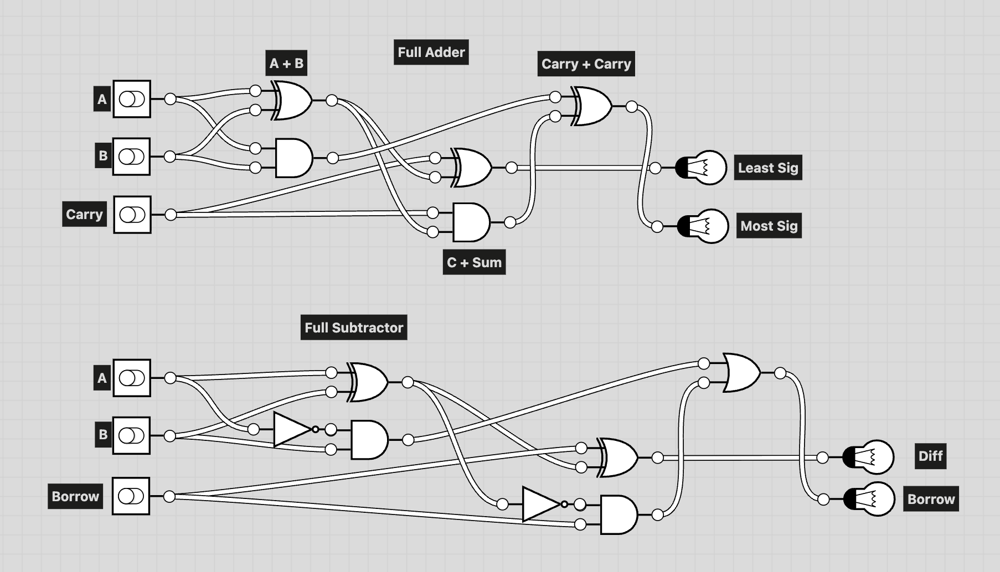

This project page is under construction.
Currently blank project page
This is my 2-bit adder design. It was created/ build upon half adders and full adders that can be seen be seen here.
This shows my diagram of a half adder, half subtractor, and a combination of the two circuits using an input reverse system.
This is my full adder and subtractor. The full adder is built from two half adders and an XOR to handle the carry bit. The full subtractor is made from two half subtractors and an OR gate which handles the borrow bit.
The 2-bit adder is made from a half adder connected to a full adder. The half adder adds bits A0+B0 and outputs Sum0 and Carry0. Full adder takes in A1+B1 and Carry0 and outputs Sum1 and Carry1
We spent a lot of time talking about the discussion question "It something is not capable of computing, can it still be a computer?" and the branching thought processes connected to it. We discussed if broken computers (which can't currently compute) are computers or not, and if not, then is a computer that is out of battery no longer a computer? If a broken computer is still a computer, then at what point is it so broken that it is no longer one? Someone in class asked if a rock was a "broken computer" or might be a computer whose potential has yet to be realised.
Another train of thought we went down related to that question, was does the "computer" need to be able to "compute" on its own. What does input look like for a computer, and does it change the fact that it is a computer or not. Klaus brought up the "choose your own adventure" example. Its interesting to think if that is a computer or not. In essence, it is a set of instructions that could be structured in a way to "compute" but it relies on a human as input, and it can't compute on its own. What if instead there was a physical computer, one powerd by marbles? That (if we ignore the human putting the marbles in place) is a machine that can compute "on its own". What if the input is electricity? Everyone seems to agree that electricity is an acceptable input for a computer, so where is the line drawn?
In the end, it seems very hard to define a computer from technical terms, and it is simpler to fall back on the social definition of a computer. A computer is whatever society thinks a computer is. This definition holds up to changes of technology in the future, and fits computational machines in the past.
In class I was reflecting a lot on the real life tomagachi reading, where slime mold was used to complete a circuit in the device. Is the slime mold part of the computer? The computer can't do computation without it... but then that brings us back to the question of a broken computer. If the slime mold does not connect the circuit, is it just a broken computer? (Lu & Lopes, 2022)
Lu, J., & Lopes, P. (2022). Proceedings of the 35th Annual ACM Symposium on User Interface Software and Technology. 28, 1–13. https://doi.org/10.1145/3526113